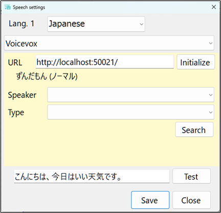

Speech settings
Settings for reading text aloud.

Text-to-speech is powered by
Windows.
Some languages may not have built-in voice
support.
Please add the appropriate voice package to Windows if
needed.
You can use third-party text-to-speech services. (Japanese only
now)
・ Procedure
Launch the
speech server application.
Enter the speech server URL on
this screen.
Click the Search button to display available
speech voices.
Select a speaker and type, then click the
Test button.
If the speech playback is successful, click
the Save button.